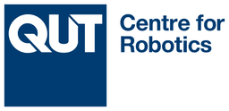
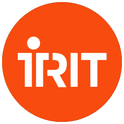
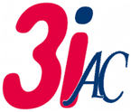
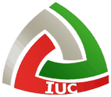

Robotics engineering student working on state estimation, localization and robot learning.
Élève ingénieur en robotique : estimation d’état, localisation et apprentissage pour la robotique.
Final year of the robotics engineering degree at UPSSITECH, Université de Toulouse. Research internships at the QUT Centre for Robotics in Australia and at IRIT in Toulouse, with a first-author paper accepted at ACRA 2026.
Dernière année du cycle ingénieur en robotique à l’UPSSITECH, Université de Toulouse. Stages de recherche au QUT Centre for Robotics en Australie et à l’IRIT à Toulouse, avec un article en premier auteur accepté à ACRA 2026.
Looking for a 6-month end-of-studies internship from 1 March 2027, in Europe or North America. Open to an R&D engineer role or a PhD afterwards.
Je cherche un stage de fin d’études de 6 mois à partir du 1er mars 2027, en Europe ou en Amérique du Nord. Ensuite, ouvert à un poste d’ingénieur R&D ou à une thèse.
A robot localizes itself from range and bearing measurements to three landmarks. Uncertainty grows while no landmark is in view, then shrinks at each observation. Simulated for this page with the model of my Kalman localization project.Un robot se localise à partir de mesures de distance et d’angle vers trois amers. L’incertitude grandit quand aucun amer n’est visible, puis diminue à chaque observation. Simulé pour cette page avec le modèle de mon projet de localisation par filtre de Kalman.
Research experienceExpérience de recherche

Apr – Aug 2026avr. – août 2026
Research intern, vision-language-action models for collaborative manipulationStage de recherche, modèles vision-langage-action pour la manipulation collaborative
Pre-trained vision-language-action (VLA) policies often fail when an instruction is rephrased or the scene changes. I built light, model-agnostic modules around a frozen policy (OpenVLA, OpenVLA-OFT) that fix this without retraining or new demonstrations.
Les politiques vision-langage-action (VLA) pré-entraînées échouent souvent quand une consigne est reformulée ou que la scène change. J’ai conçu des modules légers, indépendants du modèle, autour d’une politique figée (OpenVLA, OpenVLA-OFT), qui corrigent ces échecs sans réentraînement ni nouvelles démonstrations.
Instruction matching with sentence embeddings brought the success rate back from 74.4% to the 92.6% baseline on LIBERO.
A compact PyTorch CNN, trained on 700+ hand-annotated frames and running above 100 Hz, detects when a sub-task is done and stops the skill.
Open-vocabulary detection repaints unseen objects and masks distractors: success went from 6.7% to 66.7% under a visual shift.
Separately, fine-tuned OpenVLA, OpenVLA-OFT and LLMs (Gemma, Llama 2), and compared YOLO detectors.
Un appariement des consignes par embeddings de phrases a ramené le taux de réussite de 74,4 % à la référence de 92,6 % sur LIBERO.
Un CNN compact en PyTorch, entraîné sur plus de 700 images annotées à la main et tournant à plus de 100 Hz, détecte la fin d’une sous-tâche et arrête le geste.
Une détection à vocabulaire ouvert recolore les objets inconnus et masque les distracteurs : la réussite passe de 6,7 % à 66,7 % face à un changement visuel.
En parallèle, fine-tuning d’OpenVLA, d’OpenVLA-OFT et de LLM (Gemma, Llama 2), et comparaison de détecteurs YOLO.
First-author paper accepted at ACRA 2026.Article en premier auteur accepté à ACRA 2026.
PythonPyTorchHugging FaceIsaac SimLIBEROCALVINLinux HPC clustercluster de calcul Linux

May – Jul 2025mai – juil. 2025
Research intern, machine learning for audio signalsStage de recherche, apprentissage automatique pour les signaux audio
Measuring speech intelligibility in aircraft cockpit voice recordings, within the national BLeRIOT project.
Mesure de l’intelligibilité de la parole dans les enregistreurs phoniques de cockpit d’avions, dans le cadre du projet national BLeRIOT.
Built a labelled dataset of 691 clips from real, very noisy cockpit recordings.
Proposed EEET: self-supervised speech embeddings (HuBERT, wav2vec 2.0) with an MLP, reaching 0.91 accuracy with stratified cross-validation.
Selected robust features by injecting controlled noise, and traced 75% of outliers to short repetitive segments.
The end-to-end tool saved at least 67% of analysis time on 8 hours of recordings.
Constitution d’un jeu de données annoté de 691 extraits issus de vrais enregistrements de cockpit, très bruités.
Proposition d’EEET : embeddings de parole auto-supervisés (HuBERT, wav2vec 2.0) et un MLP, avec une exactitude de 0,91 en validation croisée stratifiée.
Choix de paramètres robustes par injection de bruit contrôlée, et 75 % des valeurs aberrantes expliquées par des segments courts et répétitifs.
L’outil complet a fait gagner au moins 67 % du temps d’analyse sur 8 heures d’enregistrements.
Estimation and localizationEstimation et localisation
Kalman localization with landmarksLocalisation par filtre de Kalman avec amers
Kalman filter for a mobile robot that measures range and bearing to known landmarks. Checked the filter’s consistency by comparing empirical and theoretical covariances over Monte Carlo runs, with 99% confidence ellipses.
Filtre de Kalman pour un robot mobile qui mesure distance et angle vers des amers connus. Cohérence du filtre vérifiée en comparant covariances empiriques et théoriques sur des tirages de Monte-Carlo, avec ellipses de confiance à 99 %.
Particle-filter SLAM on a TIAGo robotSLAM par filtrage particulaire sur robot TIAGo
SLAM based on particle filtering, developed in MATLAB and RViz, then run on a real TIAGo robot.
SLAM fondé sur le filtrage particulaire, développé sous MATLAB et RViz, puis testé sur un vrai robot TIAGo.
MATLABROS 2RViz
Multi-robot localization with GNSSLocalisation multi-robots avec GNSS
Extended Kalman filter fusing odometry, inter-robot ranges and GNSS for a fleet of five robots, with PD control, in a Python simulation.
Filtre de Kalman étendu fusionnant odométrie, distances inter-robots et GNSS pour une flotte de cinq robots, avec commande PD, en simulation Python.
Python
IMU sensor fusion on ESP32Fusion de capteurs IMU sur ESP32
Kalman filter fusing a 9-axis IMU to estimate a robot’s orientation in real time.
Filtre de Kalman fusionnant une centrale inertielle 9 axes pour estimer l’orientation d’un robot en temps réel.
C++ESP32
Robots and controlRobots et commande
Industry 4.0 collaborative cellCellule collaborative Usine 4.0OngoingEn cours
Project lead of a 20-student team, Oct 2026 to Feb 2027. A TIAGo mobile manipulator, two Yaskawa HC10 cobots, a conveyor and ZED 2 cameras work together; everything is developed in a ROS 2 / Gazebo digital twin before running on the real cell, with a safety supervisor and reusable code.
Chef de projet d’une équipe de 20 élèves, d’oct. 2026 à févr. 2027. Un manipulateur mobile TIAGo, deux cobots Yaskawa HC10, un convoyeur et des caméras ZED 2 travaillent ensemble ; tout est développé dans un jumeau numérique ROS 2 / Gazebo avant de passer sur la vraie cellule, avec un superviseur de sécurité et du code réutilisable.
Mobile robot with LiDAR mapping (ICP), OpenCV vision and ultrasonic sensors, on a Raspberry Pi and an Arduino, with autonomous, teleoperated and voice-command modes.
Robot mobile avec cartographie LiDAR (ICP), vision OpenCV et capteurs à ultrasons, sur Raspberry Pi et Arduino, avec modes autonome, téléopéré et commande vocale.
Collision-free motion with MoveIt 2Trajectoires sans collision avec MoveIt 2
Collision-free arm trajectories that avoid obstacles detected live by an RGB-D camera, and a ROS 2 / Gazebo simulation of the Yaskawa HC10 cobot.
Trajectoires de bras sans collision qui évitent des obstacles détectés en direct par une caméra RGB-D, et simulation ROS 2 / Gazebo du cobot Yaskawa HC10.
Mobile robot software in CLogiciel de robot mobile en C
Software bricks for a mobile robot: control interface, image processing without external libraries, voice commands and motion simulation.
Briques logicielles pour un robot mobile : interface de contrôle, traitement d’images sans bibliothèque externe, commande vocale et simulation de déplacement.
Pick-and-place programs on FANUC and Stäubli arms, and conveyor automation with Petri nets and GRAFCET.
Programmes de prise et dépose sur bras FANUC et Stäubli, et automatisation d’un convoyeur avec réseaux de Petri et GRAFCET.
FANUCStäubliGRAFCET
Hybrid VTOL droneDrone hybride à décollage vertical
Fixed-wing drone with vertical take-off, designed in a team of five: NACA 4412 airfoil, servo sizing, energy budget for a two-hour flight, partly 3D-printed prototype.
Drone à voilure fixe et décollage vertical, conçu en équipe de cinq : profil NACA 4412, dimensionnement des servomoteurs, bilan énergétique pour un vol de deux heures, prototype en partie imprimé en 3D.
Design, 3D printingConception, impression 3D
Learning, signals and electronicsApprentissage, signal et électronique
Reinforcement learning on a grid worldApprentissage par renforcement sur grille
Policy iteration, value iteration and Q-learning compared on a custom 7×7 Frozen Lake environment.
Itération sur les politiques, itération sur les valeurs et Q-learning comparés sur un environnement Frozen Lake 7×7 conçu sur mesure.
Smart battery chargerChargeur de batterie intelligent
Arduino charger that measures voltage and current, stops when the battery is full and shows progress on an LCD. Simulated in Proteus, then built, in a team of five.
Chargeur sur Arduino qui mesure tension et courant, s’arrête quand la batterie est pleine et affiche la charge sur un écran LCD. Simulé sous Proteus, puis réalisé, en équipe de cinq.
Master’s-level engineering degree (Diplôme d’ingénieur). Courses include estimation and localization, particle filtering and SLAM, robot modelling and control, motion planning, computer vision, deep and reinforcement learning, and real-time systems.
Diplôme d’ingénieur (grade de master). Cours notamment en estimation et localisation, filtrage particulaire et SLAM, modélisation et commande des robots, planification de trajectoires, vision par ordinateur, apprentissage profond et par renforcement, et systèmes temps réel.


2022 – 2024
Preparatory classes in mathematics, physics and computer scienceClasses préparatoires, mathématiques, physique et informatique
Kalman filters (KF, EKF, UKF), particle filters, SLAM, factor graphs, sensor fusionFiltres de Kalman (KF, EKF, UKF), filtres particulaires, SLAM, graphes de facteurs, fusion de capteurs
Robot learning and AIApprentissage et IA
VLA models, imitation and reinforcement learning, CNNs, LLM fine-tuningModèles VLA, apprentissage par imitation et par renforcement, CNN, fine-tuning de LLM
Also FPGA (VHDL) and CAN, I2C, SPI, UART busesAussi FPGA (VHDL) et bus CAN, I2C, SPI, UART
LanguagesLangues
French (native), English (B2, daily working language at QUT), German (A2)Français (langue maternelle), anglais (B2, langue de travail au QUT), allemand (A2)
Contact
Email is the quickest way to reach me. I’m based in Toulouse, France.
Le plus simple est de m’écrire par e-mail. Je suis basé à Toulouse.